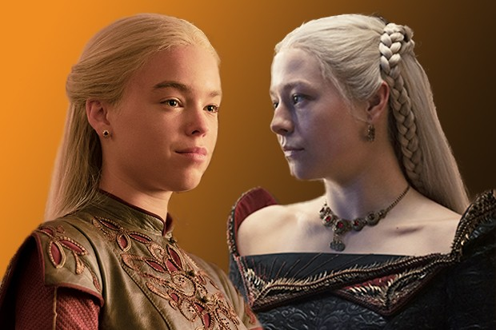
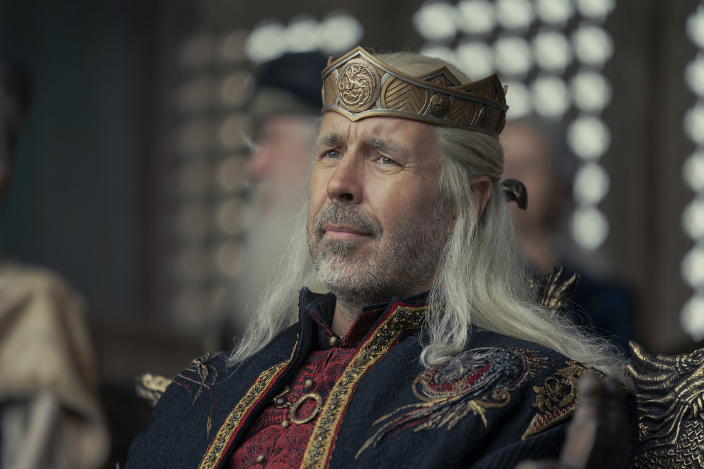
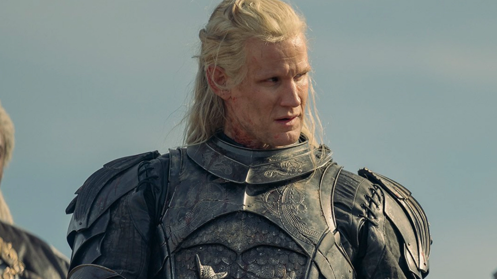
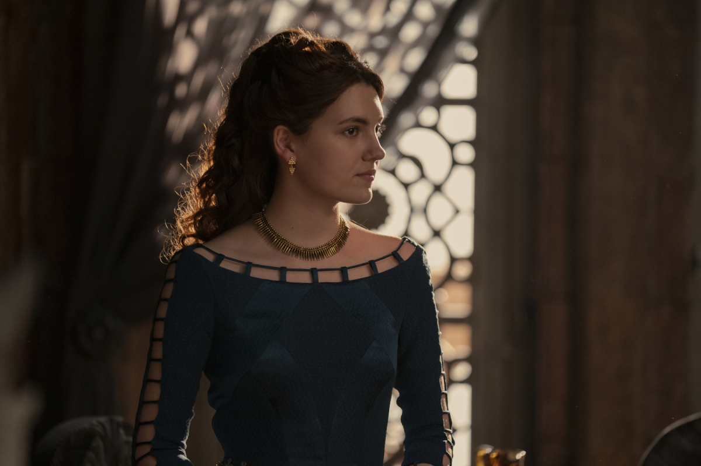
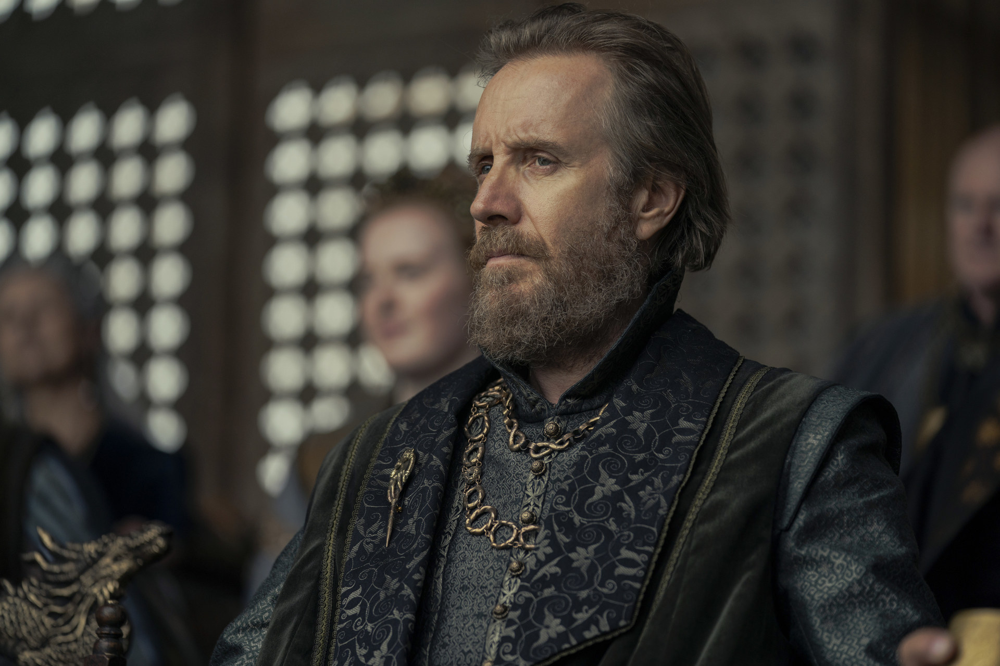

Rhaenyra Targaryen is the firstborn daughter of King Viserys I Targaryen and Queen Aemma Arryn. As a strong-willed and independent young woman, her father named her heir to the Iron Throne.
A level-headed decision maker, his reign was peaceful, though not without its challenges. He had one daughter, Princess Rhaenyra Targaryen, with Queen Aemma Arryn.
The younger brother of King Viserys I Targaryen, Daemon Targaryen is a fierce, albeit unpredictable warrior. He is no stranger to ruffling feathers, particularly those of his brother. His bravery and sword fighting skills played a pivital role in the War for the Stepstones.
The daughter of Otto Hightower, Queen Alicent Hightower was married to King Viserys I after the death of his first wife, until his passing. Together they have multiple children, the oldest being a son, Aegon Targaryen. She maintains a fierce allegiance to her house and family, souring her once strong childhood friendship with Princess Rhaenyra. Their rift spilled over into their children as well, threatening the stability of the realm.
Ser Otto Hightower is a knight of House Hightower. Though he was dismissed for a period of time, he returned to the position of Hand of the King to Viserys I Targaryen. When his only daughter Alicent became queen, he began plotting to put her son Aegon on the Iron Throne, instead of Rhaenyra.
